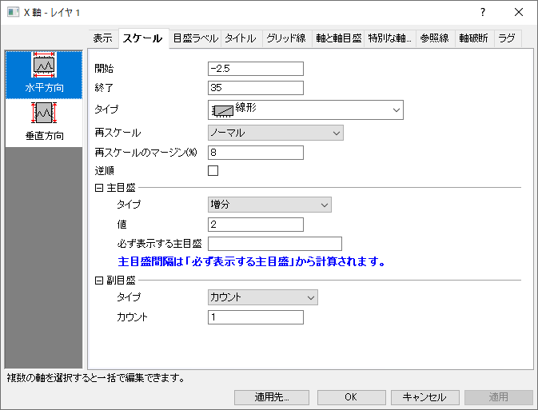
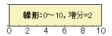
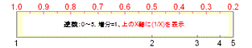
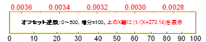
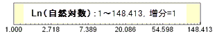
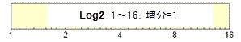
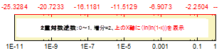

Origin 2023から、右Y軸と左Y軸の両方を表示し、表示タブで各軸を再スケールを設定すると、左と右の2つの垂直アイコンが表示され、左Y軸と右Y軸のスケールを個別に編集できます。
このタブでは、軸スケール範囲、軸タイプ、主目盛と副目盛の位置を含む軸スケールをコントロールします。2Dグラフでは、水平と垂直の軸をそれぞれ編集でき、3Dグラフでは、3つの軸(X,Y,Z)を編集できます。

|
Origin 2023から、右Y軸と左Y軸の両方を表示し、表示タブで各軸を再スケールを設定すると、左と右の2つの垂直アイコンが表示され、左Y軸と右Y軸のスケールを個別に編集できます。 |
スケールの編集前に、複数レイヤグラフのレイヤ切り替えにレイヤリストを使用できます。

このテキストボックスに開始値をセットします。
このテキストボックスに終了値をセットします。
サポートされていないグラフタイプが選択されている時、このドロップダウンリストはグレーアウトします。さらに、いくつかのグラフタイプでは以下のオプションの一部が利用できません。
| 線形 | 標準的な線形スケール: X'=X  |
|---|---|
| Log10 | 常用対数スケール（底が10の対数）、 X'=log(X)  |
| 確率 | 累積ガウス分布の逆を表します（X'=norminv(X/100)）。 累積ガウス分布は作図すると、通常、シグモイド曲線となります。 この曲線は、確率スケールを使うと直線として描くことができます。 確率はパーセントで表現されるので、全ての値は、0から100までの値に収まらなければなりません。 範囲は 0.0001 から 99.999までです。 |
| プロビット | 確率スケールと同様、シグモイド曲線を直線として作図します。 ただし、この場合のスケールは線形で、目盛間の増分は1つの標準偏差となります。 例えば、スケール内で「5」の位置は平均値（50%の確率）を表します。 「6」は平均から標準偏差1つ分離れた所を表します。 |
| 逆数 | 逆数スケール X'=1/X です。 |
| オフセット逆数 | オフセット逆数スケール X'=1/(X+offset) です。 オフセットは、0℃に対する絶対温度である273.14で定義されています。  |
| ロジット | Logit=ln(Y/(100-Y))です。 確率およびプロビットスケールと同様、シグモイド曲線を直線として作図します。 |
| 自然対数 ln | 自然対数スケールです(底がeの対数スケール)。  |
| log2 | 底が2の対数のスケールタイプです。  |
| 2重対数逆数(Weibull) | 2重対数逆数スケールX'=ln(-ln(1-X))です。  |
| カスタム関数 |
ユーザ定義軸間隔は直接式と逆関数で定義
|
| 離散 | 目盛りラベルとして、現在のレイヤの最初のプロットX値を使います。このスケールタイプは線形ですが、目盛ラベルにX値を利用し、 株価指標 などにある休日や祝日などを除外して表記します。もしスケール範囲が（ 開始 と 終了 で入力）が実際おXデータ範囲よりも大きかった場合は、超過した部分は、主目盛 や 副目盛 のセッティングに従って線形に表示されます。 |
| 常用対数スケールについて :
対数軸のスケールが1区間以内の場合、刻みとグリッド線は線形になります。 LabTalkのシステム変数@TLにより、次の関係による線形目盛にするかどうかを決定します。 10 * log10(最大値/最小値) <= 値 つまり、2区間に対して線形の軸目盛を使用する場合、この変数を14に設定します。 例えば、スクリプトウィンドウに次のように入力します。 @TL = 14 ; @TLのデフォルト値は10です。 |
このオプションは、スケールタイプがLog10、Ln、またはLog2の場合に表示されます。
通常、OriginはLog10、Ln、またはLog2スケールの正の値のみをサポートします。対称対数スケールオプションにチェックを入れると、対数スケールの正と負の値がサポートされます。
このオプションが利用できるとき、線形範囲しきい値と線形範囲長さの2つのオプションが、ダイアログに表示されます。
対数プロットにはゼロ値がないため、線形範囲しきい値を使用して、プロットがゼロ付近で無限大になるのを回避するために、プロットが線形である場合のゼロに近い値の範囲を定義できます。
線形範囲しきい値のデフォルト値は1です。
現在の対数目盛の主目盛間隔の比率を指定します。デフォルトの値は1です。
| 固定 | これを指定すると軸を再スケールすることはできません。 スケールを直接変えたり、スケールに変更をきたすような操作 (例えば、ズームインツールボタン |
|---|---|
| ノーマル | 軸を再スケールすることが可能です。 スケールを変更したり、(2Dレイヤで)「ズームイン」ツールボタン 作図のセットアップ またはレイヤ管理 ダイアログでグラフからデータセットを追加または削除する場合、再スケール のチェックボックスにチェックを入れて、データの変更に合わせてスケールを調整します。 |
| 自動 | この方式はノーマルと同様、ユーザがスケールの変更をすることを許しますが、さらに、Originが必要に応じて、軸をデータ全体が表示されるように自動的に再スケールすることを、許します。
Note:データを表示/非表示した場合、再スケールを自動に設定していても、軸は再スケールされません。この場合、自動再スケールを行うには、システム変数 @PAR = 1を設定します。 |
| 固定開始 - ノーマル終了 | 軸ダイアログボックスで、軸の開始 の値は固定され、終了 の値がノーマル モードの場合、開始 テキストボックスでの編集のみにより変更出来ます。 |
| ノーマル開始 - 固定終了 | 軸の開始 の値が ノーマル モードの場合、軸の終了 の値は固定され、軸ダイアログの終了 テキストボックスでの編集のみにより変更できます。 |
| 固定開始 - 自動終了 | 開始 の値が固定され、軸の終了 の値は自動的に再スケールされます。 |
| 自動開始 - 固定終了 | 軸の開始 は自動的に再スケールされ、終了 値は固定されます。 |
グラフの軸を再スケールする場合、この設定を使用して、N 次元の最小データ値と最大データ値の差の割合でデータセットの最小値と最大値の外側に余白を付けることができます。最小値と最大値の丸め、スケールの増分、副目盛りなど他の要因も結果のスケールに影響するため、再スケールのマージンは近似値として最適に処理されます。
スケールの開始と終了を逆にする場合はチェックを付けます。
| 増分 | 主目盛を値テキストボックスに入力する増分で設定します。目盛ラベルは各主目盛に配置されます。例えば、10ごとに主目盛を付けるには 10 を入力します。 |
|---|---|
| カウント | 主軸の中に表示する主刻みの数を絶対値として、カウントテキストボックスに入力します。 |
| 最小＆最大 | Xスケールの最小値と最大値の目盛のみ表示します。 |
| カスタム位置による | 主目盛の位置を既存のデータセット名または位置コンボボックス内にスペースで区切って入力した数字を元にセットされます。 |
| グラフの列ラベルによる | 列ラベル行の値を使用して主目盛にラベル付けします。列ラベルドロップダウンリストでラベル行をセットします。(サンプルとして、このリストの4番目のボックスチャートを参照してください） |
このオプションは、タイプで増分が選択されているときのみ利用できます。対応するテキストボックスでこの軸の主目盛の増分を設定します。軸スケールの単位が時系列の場合、増分テキストボックスの値には、適切な時系列の表現を設定する必要があります。 下表に、指定可能な時系列の増分の単位と、その略語を示します。
| 増分 | 略語 |
|---|---|
| sec (秒) | s |
| min(分) | m |
| hour(時) | h |
| day(日) | d |
| week (週) | w |
| month(月) | mo |
| quarter (四半期) | q |
| year(年) | y |
時系列グラフでは、数値に増分の単位 (または、その略語) を添えて、増分のサイズを指定します。 例えば 1month は主軸の増分を1ヶ月に設定します。 4Q は主軸の増分を4四半期 (つまり1年) に設定します。 (数字と増分の単位の間にスペースを開けないでください。)
このオプションは、タイプでカウントが選択されているときのみ利用できます。テキストボックスに必要な主目盛の数を入力します。
Note：
|
このオプションは、タイプでカスタム位置によるが選択されているときのみ利用できます。このドロップダウンリストで主目盛として使用するデータセットを指定します。また、目的のデータセット名を入力したり、スペース区切りの数字も使用できます。
|
位置コンボボックスでは、直近でアクティブになったワークシートの列が最初にリストされます。一度このダイアログを閉じ、任意のブックとシートをクリックしてダイアログを再度開くことができます。 |
このオプションは、タイプでグラフの列ラベルによってが選択されているときのみ利用できます。このドロップダウンは自動と使用可能な列ラベル(ロングネーム、単位、コメント等)を選ぶことができます。
このオプションは、タイプでカウントか増分が選択されているときのみ利用できます。必ず表示したい主目盛の位置を指定します。
例えば、X 軸範囲が-3から3で、増分が2であるときに、1の主目盛を必ず表示したいとします。必ず表示する主目盛を1に設定すると、主目盛は-3、-1、1、3の位置に表示されます。
Note: 暦通りの日付データを目盛ラベルに使用する場合、このオプションを使用して、表示する最初の主目盛ラベルの値と、後続の副目盛がどの値に収まるかを指定できます。以下の形式のテキストを入力します。
例えば、X軸の範囲が99/1/1から99/12/31で、最初の主目盛ラベルを99/1/4にし、それに続く副目盛をすべて月曜日に表示したい場合、必ず表示する主目盛に、以下のいずれかのように入力します。
|
| カウント | 隣り合う主目盛の間に表示する副目盛の数をカウントテキストボックスに指定します。例えば、主目盛のタイプに「増分」を選択して、値テキストボックスに1を入力し、副目盛のカウントテキストボックスに1を入力すると、副目盛の間隔が0.5に設定されます。つまり、隣り合う主刻み間に一つの副刻みが表示されます。 |
|---|---|
| カスタム位置による | 主目盛の位置を既存のデータセット名または位置コンボボックス内にスペースで区切って入力した数字を元にセットされます。 |
このオプションは、タイプでカウントが選択されているときのみ利用できます。テキストボックスに必要な副目盛の数を入力します。軸のスケールの単位が時系列を表す場合、Originはこの値をつかって、適切な副目盛ラベルを自動で決定します
このオプションは、タイプでカスタム位置によるが選択されているときのみ利用できます。このドロップダウンリストで主目盛として使用するデータセットをしていします。目的のデータセット名を入力したり、スペース区切りの数字も入力できます。